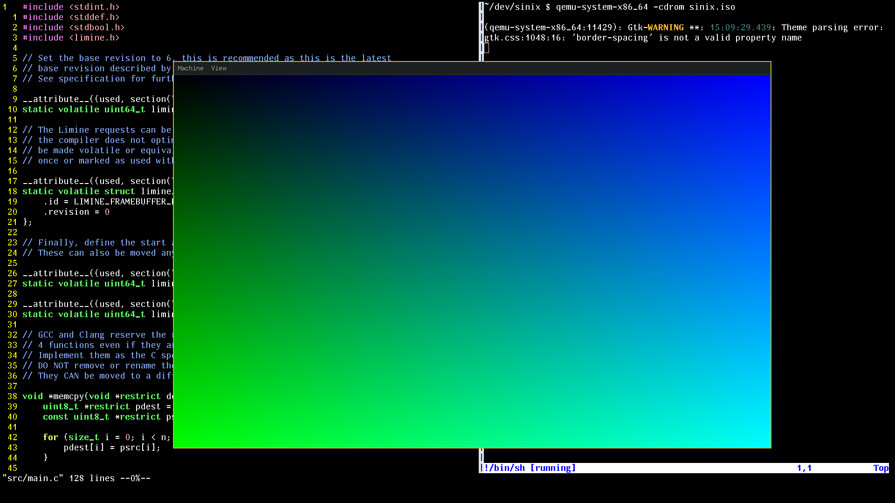

I've been programming for quite a while but I never once had a long term
side project
which I worked on whenever I was bored. I always had a project which I worked on till I considered
it completed and then I'd start a new project.
This kernel I'm writing is my first ever long term project which I will come back to work on every once in a while.
So far, the kernel has:
I finished the logic for pong
I got pong running on the framebuffer but it's flickering really badly so I need to figure out a way to fix that.
I also wrote a tiny PS/2 driver so I can receive keyboard inputs which is pretty cool
I wrote this page which I will use to document my progress on the kernel.
I added a back buffer to fix the flickering issue for pong
Next up, I wanna write a kmalloc() function so I can allocate a backbuffer on the heap instead of the stack
I got pong running on the framebuffer but it's flickering really badly so I need to figure out a way to fix that.
I also wrote a tiny PS/2 driver so I can receive keyboard inputs which is pretty cool
I wrote a tiny framebuffer driver that can draw filled and outlined rectangles.
This was surprisingly simple thanks to limine :3
I wrote a tiny serial driver in about 54 lines of C.

Started this project and got barebones limine template running